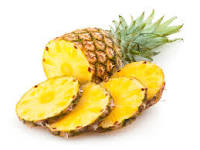

A maçã é um pseudofruto pomáceo da macieira, árvore da família Rosaceae. É um dos pseudofrutos de árvore mais cultivados, e o mais conhecido dos muitos membros do gênero Malus que são usados pelos seres humanos. Banana, pacoba ou pacova é uma pseudobaga da bananeira, uma planta herbácea vivaz acaule da família Musaceae. São cultivadas em 130 países. Originárias do sudeste da Ásia são atualmente cultivadas em praticamente todas as regiões tropicais do planeta. O ananás ou abacaxi, é uma infrutescência tropical produxida pela planta de mesmo nome, caracterizada como uma planta monocotiledônea da família das bromeliáceas da subfamília Bromelioideae. É um símbolo das regiões tropicais e subtropicais.
